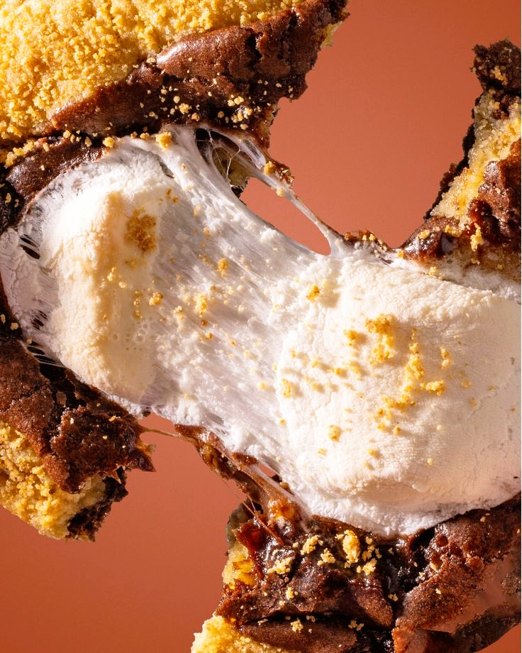

Che Bakery es una marca que combina el amor por lo dulce con un estilo único y creativo. Nos especializamos en la elaboración de cookies y postres, ofreciendo productos que se destacan por su sabor, calidad y originalidad. Pero Che Bakery es mucho más que una pastelería. También contamos con una línea de merchandising que incluye prendas diseñadas para transmitir la esencia y personalidad de nuestra marca. Nuestra propuesta busca crear una experiencia que va más allá de lo gastronómico, conectando con quienes disfrutan de los pequeños placeres, los sabores irresistibles y un estilo propio.